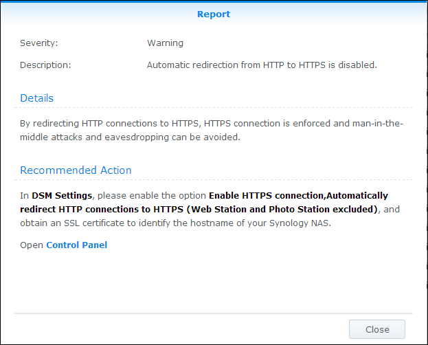

使用入门
DSM 有一项新功能，称为安全顾问，该功能可保护 Synology NAS 安全。安全顾问会扫描 Synology NAS 的整体配置并提供其安全状态的详细报告。此外，安全顾问会告诉您如何管理所有已识别的安全性风险。打开安全顾问来了解如何：
- 运行安全性扫描
- 查看安全性规则报告
- 管理安全性风险
运行安全性扫描
- 您首次打开安全顾问时，系统将询问您使用 Synology NAS 的目的。根据您的情况勾选家庭或工作，然后单击确定。您以后随时可在高级页面中更改此设置。
- 安全顾问将开始扫描您的 Synology NAS 配置。您可以在概述页面中看到整体安全状态、扫描进程和结果摘要。
- 扫描结束后，将显示各类别安全性规则的结果。安全顾问会为各类别提供整体状态信息，并对发现的任何安全性风险情况进行总结。


查看安全性规则报告
- 单击概述页面上的查看结果。您可以查看已完成扫描的详细信息。
- 双击任何安全性规则来打开详细报告。各报告可能含有每一项安全性规则的安全性、描述、详情和建议的操作等信息。 

管理安全性风险
让我们来看一个详细的故障安全性规则实例，了解如何进行管理。
- 安全顾问会识别任何故障安全性规则的潜在安全性风险。在此，安全顾问检测到“已禁用自动封锁”。
- 打开故障安全性规则来查看详细信息。在建议的操作下，安全顾问将提供管理此安全性风险的指导。
- 单击打开来直接进入相应的设置页面，并按照建议的操作执行。
- 在结果页面下，选择该规则并单击扫描来重新扫描该故障安全性规则。
- 未检测到此规则的安全性风险。安全顾问会继续帮助您识别潜在的安全性风险，并给出建议的操作来管理这些风险。通过在安全顾问中进行定期扫描可保持 Synology NAS 安全！